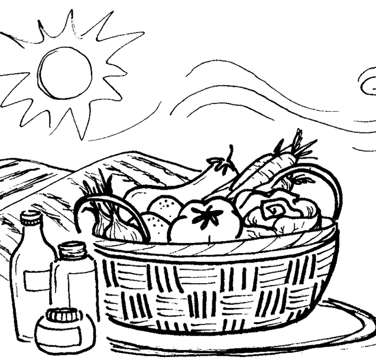
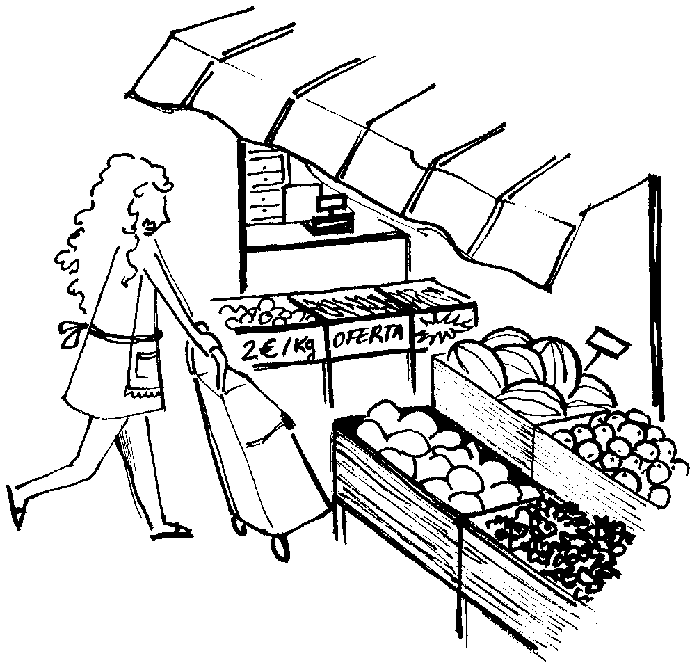
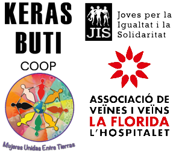

EIXOS D'ACCIÓ

AGROECOLOGIA I ECOFEMINISMES

CULTURES SUBALTERNITZADES

MIGRACIÓ, CURES I COMERÇ MIGRANT
Comunalitats Urbanes és un nou programa del Departament d’Empresa i Treball per dinamitzar les xarxes
d’economies locals des de la perspectiva del dret a la ciutat i de l’economia social i solidària. Les comunalitats
formen part del Programa d’Economia Social de la Generalitat de Catalunya, juntament amb els Ateneus Cooperatius i els Projectes Singulars.
“La Florida s’aveïna”, la comunalitat de l’Hospitalet de Llobregat te com a objectiu principal impulsar línies d’acció i intercooperació als barris de la Florida i Les Planes, un territori anomenat administrativament com a Districte IV.
És per a nosaltres un repte i una oportunitat per accedir a recursos al servei d’un nou espai de possibilitat. Devant d’un sistema d’explotació econòmica del territori com el que tenim, que legitima un model extractivista i
“transgènic” que amenaça la diversitat cultural i econòmica i precaritza les vides de moltes persones, la comunalitat busca trencar l’hegemonia del seu relat i treballar per fer emergir altres models que posin la
cura de la vida al centre, així com treballar en l’enxarxament dels nostres barris.
La comunalitat vol sumar-se i aprofitar alhora els aprenentatges i el treball realitzats per La Col·lectiva, l’Ateneu
Cooperatiu de l’Hospitalet, a fi d’establir en un full de ruta compartit objectius comuns i rols complementaris
que conflueixin i ajudin a enfortir els béns comuns per construir nous projectes d’ajuda mútua. A partir del moviment veïnal i del teixit associatiu suscitarem nous projectes d’economia local des d’una lògica coopertivista
que enforti l’economia social i solidaria de la ciutat.
AGROECOLOGIA I ECOFEMINISMES
CULTURES SUBALTERNITZADES
MIGRACIÓ, CURES I COMERÇ MIGRANT

XARXA DE SUPORT MUTU

LES CURES AL CARRER

LABORATORI DE CUINA

ORIENTACIÓ JURÍDICA

RADIO ENTRE TOTXS

ESCOLA POPULAR

XARXA D'OCUPACIÓ

CURSOS D'ARRELAMENT SOCIAL

A JUGAR AL CARRER

CINEMA AL BARRI

SOTA L'ASFALT L'HORTA
PROMOU I FINANÇA:

ENTITATS ACTIVADORES:
CONTACTA AMB NOSALTRES
On
C/ dels Pins 10, Hospitalet de LlobregatEls nostres horaris
Dimarts de 17h a 20Telefon
641443061Correu
hola@lafloridasaveina.com